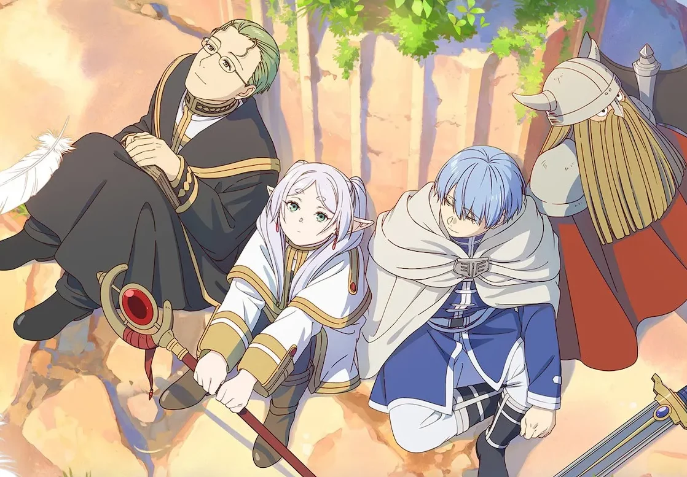

Wanting to get into anime? I got you.

Intro
So, you’ve probably heard at least once about the famous japanese animations with their distinct art styles and storytelling. A form of entertainment that has existed since the early 20th century. And if you clicked on this blog, something tells me you’ve also felt the urge to dive into this kind of content. But with so much variety, where do you even begin?
In this blog, I’ll share a few tips on how to find your way through the vast world of anime, as well as some personal recommendations.
Quick tips
1. Take what has proven to work for you before
Do you like romance films? Suspenseful K-dramas? Crime series? You already have a foundation to start with. Look for anime synopses that match something you’ve watched and enjoyed before, even if it’s a completely different type of media. I’m sure you’ll find at least one title that catches your attention.
2. Start with movies
If you’re still uncertain about committing to a show with many episodes or multiple seasons, start with films like Princess Mononoke (1996), Suzume (2022), Weathering With You (2019), or A Silent Voice (2016). Movies can be your best allies on the journey to discovering your anime style. They usually run under two and a half hours and offer complete, impactful experiences that can move, entertain, and captivate you just as much as long-running shows.
3. Learn about the creation process behind an anime
If you’re like me and love understanding what makes a story so captivating, how it was built and what makes it work this can be a huge advantage in connecting with new shows. Do you like drawing, animation, writing, worldbuilding, or soundtracks? You’ll find a whole feast waiting for you.
4. Connect with the community
One of the best things about getting into something as established as anime is that you’ll find a huge community ready to give you recommendations or simply chat with you. There are events, online communities, and discussion groups all over the internet. Or, if you’re shy at first, you can simply follow discussions about different shows on social media or save those famous edits.
Note: If you’re a minor, take this advice with caution! Don’t engage in personal conversations with strangers online, and make sure your guardians are aware of local events you want to attend.
Anime recommendations
If I were starting anime today, these are the titles I’d watch again!Note: Always check age ratings and content warnings.
1. Frieren: Beyond Journey’s End
The story follows Frieren, a long-lived elven mage who regrets not getting to know her former companions better before they passed away. Carrying that grief and her desire to understand humans, she embarks on a new journey to revisit the places she once traveled, seeking new connections and exploring the meaning of time and life alongside new partners.
Studio: Madhouse | Genre: Adventure, Fantasy, Drama
2. Bocchi the Rock!
Hitori Gotō, called Bocchi-chan by her bandmates, is extremely anxious and socially awkward. She dreams of becoming a rock star despite her difficulties, while also longing to make friends. She gets the chance to pursue both after she is approached by another girl, Nijika Ijichi, who invites her to join her newly formed Kessoku Band.
Studio: CloverWorks | Genre: Comedy, Music
3. Delicious In Dungeon
This story follows the adventurer Laios, whose party, after being defeated, loses Falin — his sister — to a dragon that devours her. With no money for supplies, they decide to return to the dungeon and survive by eating the monsters they hunt, guided by the cook Senshi, as they race against time to rescue Falin before she is fully digested.
Studio: Trigger | Genre: Adventure, Comedy, Fantasy, Cooking
4. Cyberpunk: Edgerunners
The anime is based on the game Cyberpunk 2077 and is set in Night City, a metropolis that suffers from cybernetic addiction, gang violence and heavy corruption. The story follows David Martinez who, after losing everything he had, chooses to become an “edgerunner”: a high-tech mercenary.
Studio: CD Projekt Red | Genre: Cyberpunk
5. Attack On Titan
In the world of Attack on Titan, the remaining humans live within massive walls built to protect them from giant Titans. In the first season, we follow Eren Yeager and his friends Mikasa Ackerman and Armin Arlert as they join the elite military group known as the Survey Corps, who fight against the Titans. As Eren battles, he seeks to uncover the history of his world and the origins of the Titans.
Studio: Wit Studio, MAPPA | Genre: Action, Dark Fantasy, Post-Apocalyptic
Final thoughts
After this brief dive into the world of anime, I hope I’ve sparked your curiosity to explore more of this fascinating universe of possibilities known as anime. I assure you, you’re up for a ride!